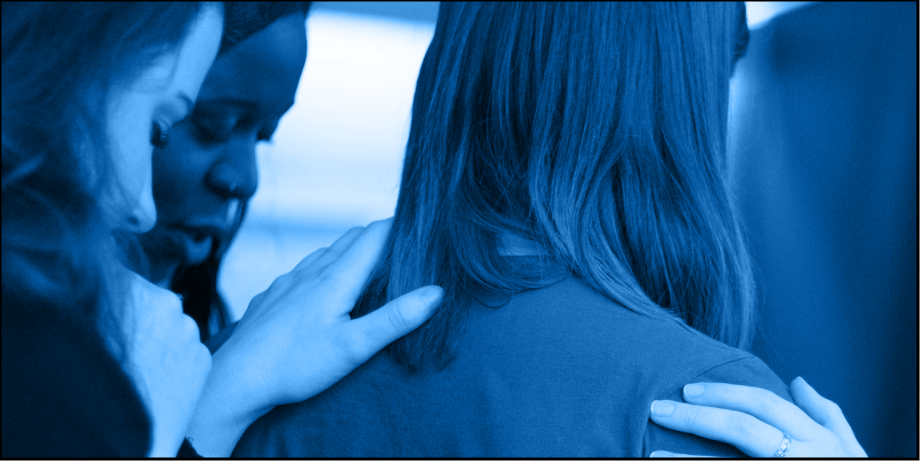

Início
Sobre

Mãos que Ajudam é um programa permanente de ajuda humanitária e de serviço comunitário, que mobiliza milhares de voluntários de todas as idades, membros de
A Igreja de Jesus Cristo dos Santos dos Últimos Dias
, estendendo a mão a quem precisa.
Esqueceu a password?
Login
Criar conta